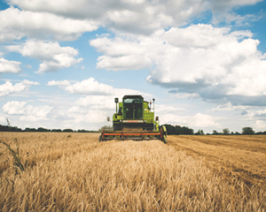
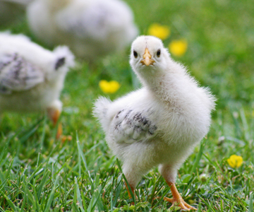
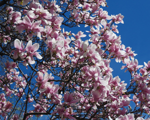
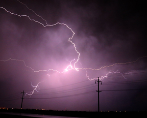

For an accurate and waterproof forecast when you need it.
Farmer John's crops have florished after a rainy monsoon season.Baby chicks are ready for the warmer weather this spring. Are you?Franklin resident Betty Smith sent in this amazing shot after the rainstorm last Friday.The cherry blossoms are a sure sign that spring has arrived.The last snowfall of 2017.A gorgeous shot taken by Springville resident Sheryl Patterson.